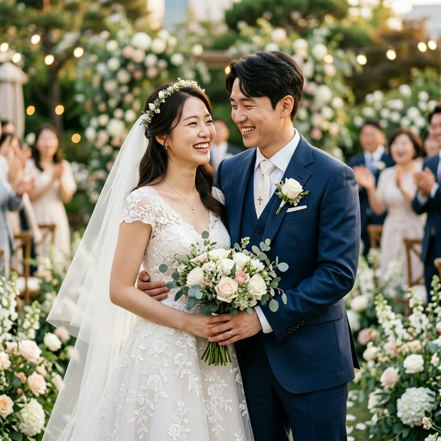
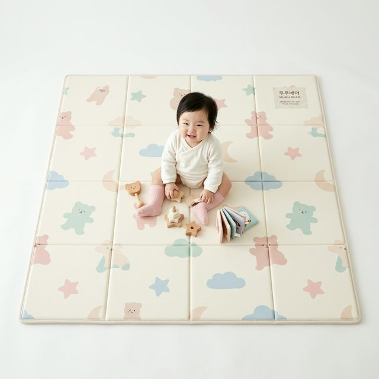
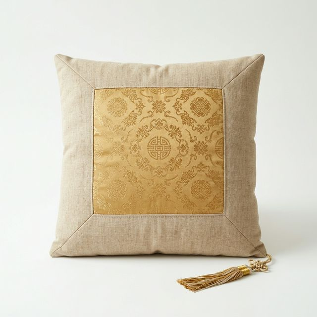
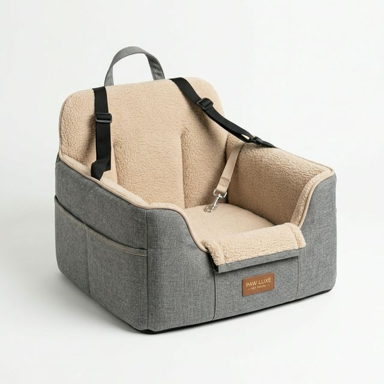
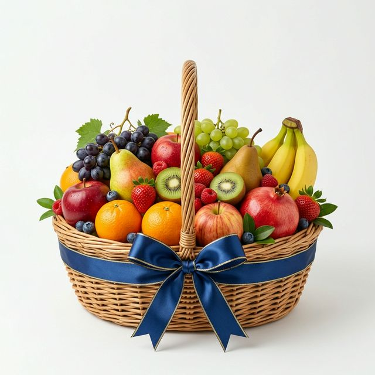
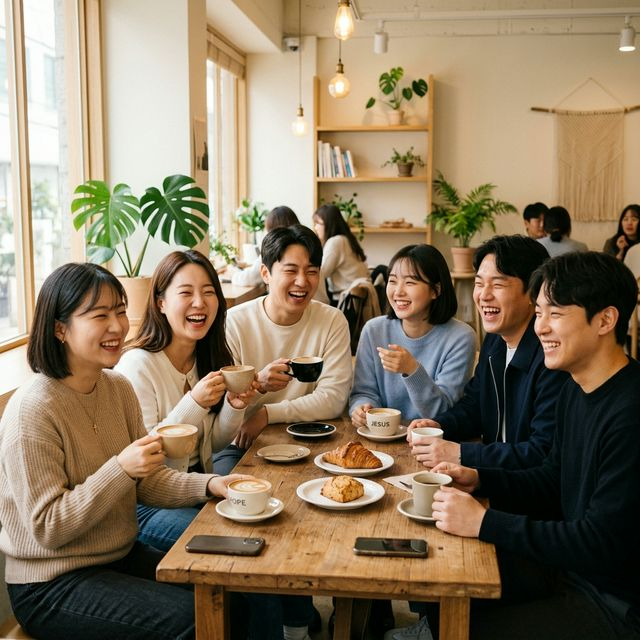
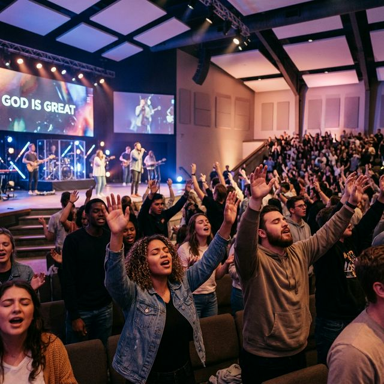

"내가 거룩하니 너희도 거룩하라"
베드로전서 1:16
현재 매칭 현황
128
총 매칭(쌍)
42
깊은 대화
31
교제중
8
식장예약
15
결혼완료
AI 추천 매칭
이지은 성도 (97%)
서초 사랑의교회 · 28세 · A형
#사도바울형 #말씀중심 #기도하는청년
프리미엄 멤버
다윗 (32) 2D
사도바울형 · B형
에스더 (28) 2D
마리아형 · O형
조슈아 (30) PREMIUM
베드로형 · A형
한나 (29) PREMIUM
한나형 · AB형
축복의 소식
 | 결혼 강하늘 & 최지우 2026.03.15 · 서울 포시즌스 | 축하 128명 |
| 약혼 이동욱 & 김태희 2026.03.20 · 분당우리교회 | 축하 85명 | |
| 교제 김수현 & 아이유 2026.03.18 · 매칭 후 교제 시작 | 응원 62명 | |
| 결혼 현빈 & 손예진 2026.03.10 · 강남은혜교회 | 축하 210명 | |
| 매칭 정해인 & 윤아 2026.03.22 · 찬양 비전 연결 | 응원 34명 |
💒 예배 및 집회 소식
부활절 연합 새벽 예배
3월 31일 오전 5:30 · 여의도 광장
🕯️ 추천 목사님 멘토링
결혼 응원 후원

매트링크 유아매트
강하늘 & 최지우 부부
후원 62명

하늘매트 기도방석
이동욱 & 김태희 부부
후원 38명

하스펫 강아지카시트
현빈 & 손예진 부부
후원 45명
하늘바람교회 침낭
박보검 & 수지 부부
후원 21명
은혜출산 선물세트
김하늘 성도 축하
후원 15명

감사 과일바구니
이은혜 성도 축하
후원 28명
부동산 수수료 지원
김영복 집사님 제공
신혼부부 0.3% 할인
보험 상담 지원
박은총 집사님 제공
무료 재무 설계
🤝 함께하는 파트너
⛪ 함께하는 교회 (10+)
🏛️ 함께하는 기관 (10+)
🏢 함께하는 기업 (10+)
👤 함께하는 성도 (10+)
공동체 피드
에스더 · ISFJ · O형
2시간 전 · 사랑의교회 · 디자이너
좋아요 24개 · 댓글 5개

정유진 성도 · ENFP · B형
1시간 전 · 여의도순복음 · 대학원생
좋아요 42개 · 댓글 12개

이한나 성도 · ISFP · AB형
3시간 전 · 분당우리교회
좋아요 56개 · 댓글 8개
조슈아 · ENTJ · A형
5시간 전 · 숭실교회 · 마케터
좋아요 18개 · 댓글 3개
오늘의 묵상
하나님께서는 우리에게 거룩함을 요구하십니다. 이는 완벽함이 아니라, 하나님을 향한 마음의 방향입니다.
세상은 우리를 끊임없이 타협하게 만들지만, 거룩함은 작은 순종에서 시작됩니다. 매일의 기도와 말씀 묵상이 그 첫걸음입니다.
오늘 하루, 내 삶에서 하나님을 기쁘시게 할 한 가지를 실천해 보세요. 그것이 바로 거룩함의 시작입니다.
📖 성경통독
구약 39권
신약 27권
📖 추천 설교
🎬 추천 영상 (결혼 가이드)
🕊️ 신앙 Q&A
Q1. 배우자와 신앙의 온도가 다를 때 어떻게 하나요?
A. 기도로 인내하며 서로의 다름을 존중하는 것이 중요합니다... (by 디모데 성도)
Q2. 주일 성수에 대한 가치관 차이는 어떻게 좁히나요?
A. 미리 충분한 대화를 통해 서로의 우선순위를 공유하세요... (by 루디아 권사)
더 많은 신앙 문답 보기 (+3 건)
🙏 기도 응답
✨ 응답된 기도
"취업 6개월 기도 후 합격 소식! 함께 기도해주신 성도님들 감사합니다!"
— 김하늘 성도 · 3일 전 · 🙏 128명 참여
✨ 응답된 기도
"어머니 수술이 성공적으로 끝났습니다. 하나님을 찬양합니다!"
— 박유진 성도 · 1주 전 · 🙏 256명 참여
✨ 응답된 기도
"홀리온에서 만난 분과 약혼했어요! 믿음의 배우자를 주신 주님 감사합니다!"
— 이동욱 성도 · 2주 전 · 🙏 342명 참여
🕯️ 기도 요청
기도 부탁드립니다
"아버지께서 입원하셨습니다. 빠른 치유를 위해 기도해 주세요."
— 최은혜 성도 · 2시간 전
기도 부탁드립니다
"대학원 논문 심사가 있습니다. 지혜와 평안을 위해 기도해 주세요."
— 정민준 성도 · 5시간 전
기도 부탁드립니다
"선교지에서 복음을 전하고 있습니다. 안전과 동역을 위해 기도해 주세요."
— 박선교 전도사 · 1일 전
활성 대화
베들레헴 꽃사슴 · INFP
내일 예배 때 뵐 수 있을까요?
12:30
에스더 · ISFJ
찬양 연습 일정 공유드려요!
어제
그룹 채팅
청년 연합 기도모임
금요 기도회 장소 안내
김하늘 성도님
인천 은혜교회 · 30세 · ENFP · A형
#사도바울형 #말씀중심 #기도인
📖 "모든 것이 합력하여 선을 이루느니라" (롬 8:28)
🎵 "요게벳의 노래"
🙏 "좋은 배우자를 만나게 해주세요"
💳 프리미엄 요금제
월간 정기구독
29,000원
크레딧 충전
3,000 ~
❓ 자주 하는 질문 (FAQ)
Q. 매칭은 어떤 기준으로 이루어지나요?
사전 작성하신 43가지 신앙 가치관 질문과 성향 테스트 결과를 바탕으로 AI가 최적의 성도를 추천해 드립니다.
Q. 앱 이용료는 얼마인가요?
기본 매칭 열람은 가능하며, 깊은 대화 신청 시에는 월 구독권이나 크레딧이 필요합니다.
🕊️ 신앙가치관 테스트
Q1. 교회에서 가장 보람된 순간은?
🧬 NBTI 테스트
Q1. 교제에서 나는?